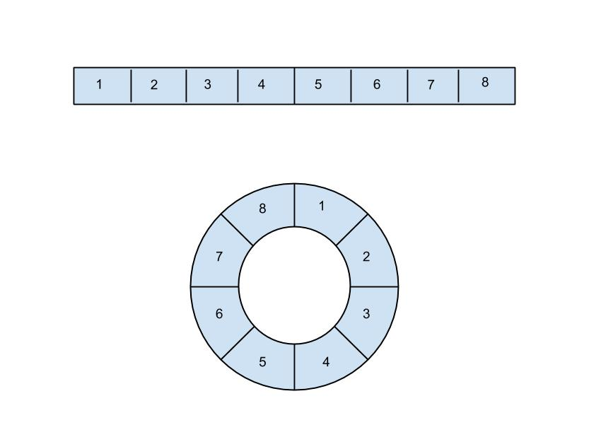

The .cycle Enumerable
Sept. 17 2015
Ruby enumerable provides us a lot of elegant way to access, modify, create data structures we need. They can shorten the code a lot if used right. I came accross this .cycle enumerable immediately drawn by its interesting behavior. It seems there is not much documentation in the Ruby docs. After doing some research, I think I would be good to put the behavior of this Enumerable in my own word, as I have seen this structure in other languages.
This is the description from the docs:
cycle(n=nil) → an_enumerator
Calls block for each element of enum repeatedly n times or forever if none or nil is given. If a non-positive number is given or the collection is empty, does nothing. Returns nil if the loop has finished without getting interrupted.
#cycle saves elements in an internal array so changes to enum after the first pass have no effect.
If no block is given, an enumerator is returned instead.
a = ["a", "b", "c"]
a.cycle { |x| puts x } # print, a, b, c, a, b, c,.. forever.
a.cycle(2) { |x| puts x } # print, a, b, c, a, b, c.
At first it might be a little bit confusing. To better understand .cycle, I would use the concept of circular array to better describe the enumerable's behavior. 
As shown in the image, we have two figures, a rectangle block representing a normal array, and a circular block representing the circular array. What the .cycle does is take the original array and connect its end to its beginning to create a loop, a cycle, thus the name cycle for this enumerable. In the example, the parameter for the enumerable indicate how many copy of the original array it will contain, which is 2 in the case of the Ruby docs.